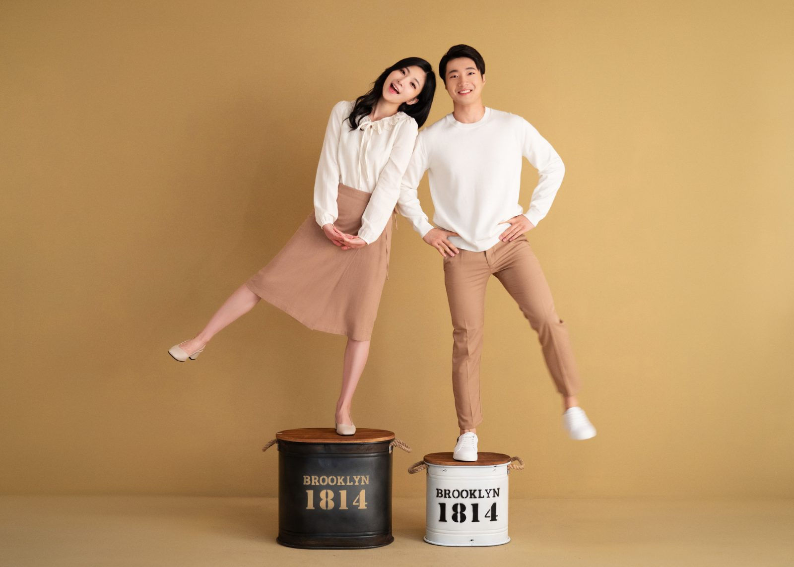
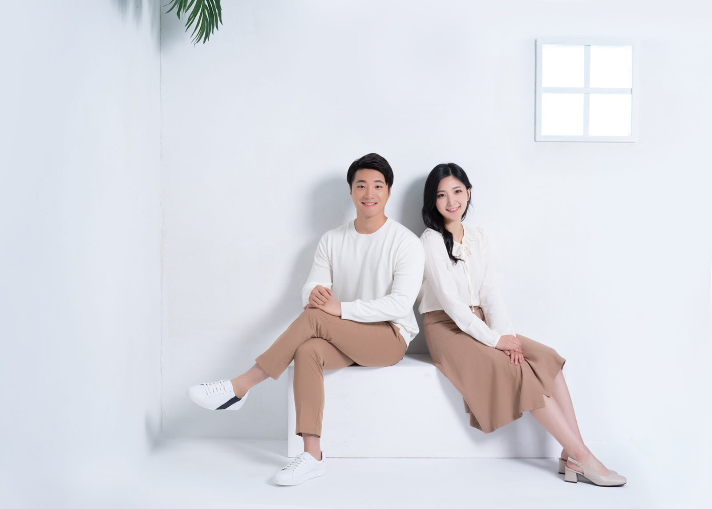
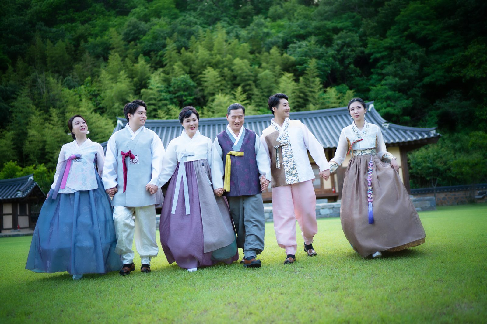
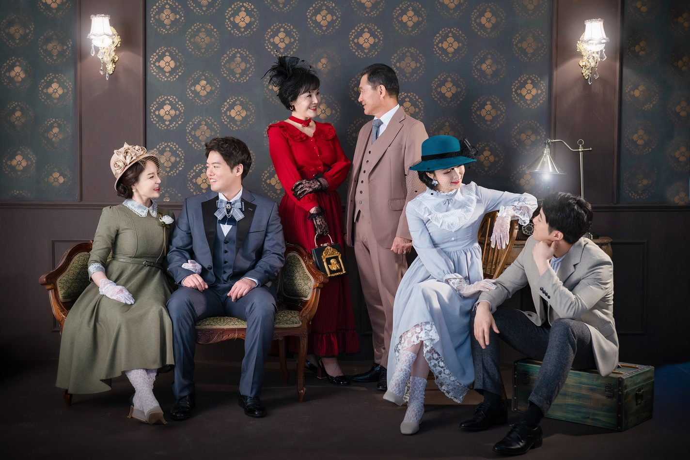
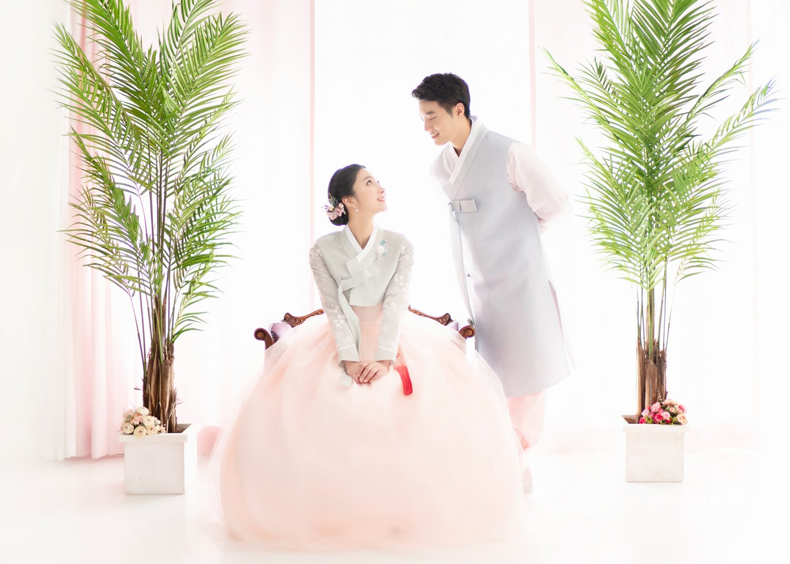
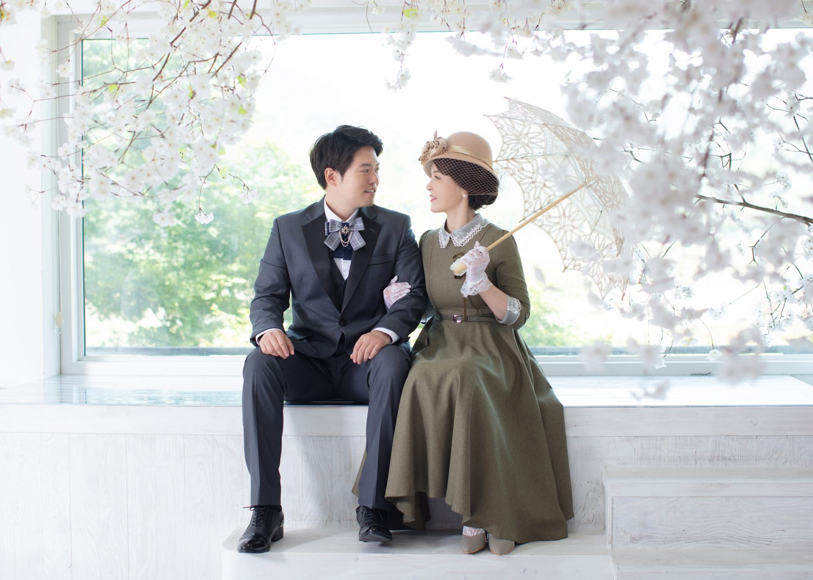
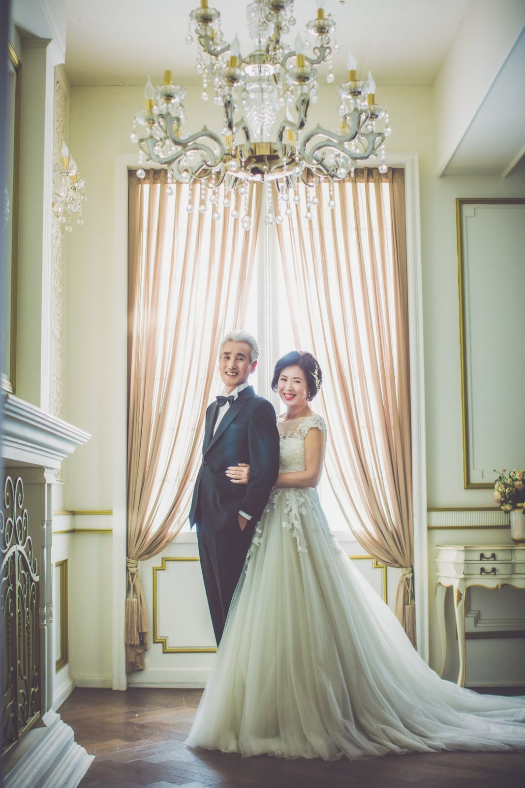
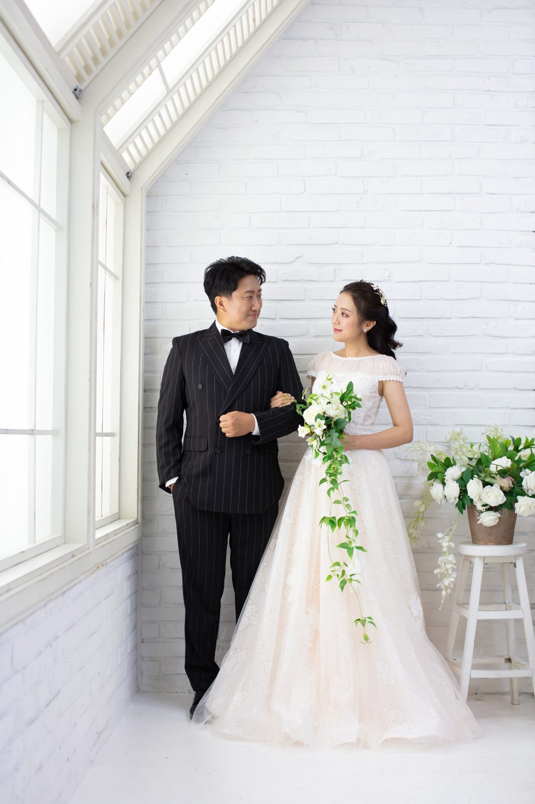

창원 가족사진, 어떻게 하면 행복하게 찍을까 — 컨셉별 촬영 이야기
2026-10-18 발행
창원 가족사진을 예약하고 나서 가장 많이 하는 걱정은 옷이 아닙니다. "우리 가족이 어색하면 어떡하죠"입니다. 그래서 오늘은 옷 이야기는 잠시 접어두고, 가족이 웃는 순간을 어떻게 남기는지 — 컨셉별로 사진을 보면서 이야기해 보겠습니다.
창원 가족사진, 어떻게 하면 행복하게 찍을 수 있을까요? 답은 생각보다 단순합니다. 잘 보이려고 애쓰지 않는 것입니다. 사진은 잘 나오는 순간을 고르는 일이 아니라, 즐거웠던 순간을 남기는 일입니다. 컨셉을 나눠 준비하는 이유도 가족마다 "행복한 모습"이 다르기 때문입니다.
캐주얼 — 평소의 우리
가장 편한 컨셉입니다. 청바지에 셔츠, 아이는 평소 입던 옷. 스튜디오 배경이 밝아서 표정이 그대로 드러납니다. 이 컨셉에서는 재미있는 포즈를 많이 씁니다. 발을 번갈아 올리고, 서로 어깨를 기대고, 아이를 안아 올리고. 서로 쳐다보며 웃는 사진이 대표 사진이 되는 경우가 많습니다.


한복 — 걸으면서 찍는 사진
한복은 앉아서 찍는 것보다 걷는 사진이 예쁩니다. 소매가 흔들리고 치마가 펴지면서 옷의 색이 살아납니다. 의령 야외촬영장에서는 이 걷는 사진을 위해 넓은 길을 씁니다. 서로 손을 잡고 한 걸음씩, 서로를 보며 웃으면 그게 한 장입니다.


복고 — 가족이 다 같이 옛날 사람이 되는 날
복고 컨셉은 준비가 조금 필요하지만, 그날의 웃음이 가장 큽니다. 모자와 장갑, 목걸이 같은 소품을 하나씩 나눠 쓰면 서로를 보며 웃게 됩니다. 어르신이 젊었던 시절의 옷을 다시 입으시는 날이라, 부모님 세대가 특히 좋아하십니다.

한복과 복고를 스튜디오에서 찍는 날도 있습니다. 배경의 색이 단정하면 옷의 무늬가 사진의 주인공이 됩니다. 꽃을 든 사진 한 장, 벚꽃 배경에 서로 마주 보는 사진 한 장. 같은 컨셉이라도 배경을 바꾸면 전혀 다른 사진이 됩니다.


웨딩·파티복 — 다시 입는 날
부모님의 리마인드웨딩, 또는 결혼기념일 촬영입니다. 드레스와 정장을 다시 입고, 자녀까지 함께 서면 한 장의 사진이 세대를 담습니다. 홀의 샹들리에 아래에서 찍은 사진과 창가에서 찍은 사진은 같은 옷인데도 분위기가 완전히 다릅니다. 두 자리 모두 찍어 보시는 것을 권합니다.


야외 — 하루의 끝에서
해가 기울 때의 빛은 실내 조명으로는 낼 수 없는 색입니다. 의령 야외촬영장이나 정원에서 노을을 기다렸다가 찍는 사진은, 같은 가족이어도 훨씬 차분해 보입니다. 이 한 장을 위해 시간을 조금 늦춰 잡으시는 것도 좋습니다.

가족이 웃게 만드는 세 가지
첫째, 아이들을 먼저 찍습니다. 아이가 웃으면 어른들이 따라 웃습니다. 둘째, 어르신은 앉아서 찍습니다. 서 계시면 다리가 먼저 힘들어지고 표정이 굳습니다. 셋째, 큰 사진부터 찍습니다. 대가족사진을 먼저 끝내면 그 뒤로는 마음이 편해집니다. 이 세 가지만 지켜도 촬영장 분위기가 달라집니다.
사진을 어색해하시는 분께는 늘 같은 말씀을 드립니다. "카메라를 잊으실 필요는 없어요. 그냥 옆에 있는 사람을 한 번 봐 주세요." 그러면 대개 십 초 안에 표정이 풀립니다. 서른일곱 해 동안 가장 자주 쓴 방법입니다.
마지막으로 한 가지만. 컨셉은 저희가 정해 드리는 것이 아니라, 가족이 원하는 것을 고르시는 것입니다. 캐주얼 한 가지로 끝내셔도 좋고, 한복과 복고를 함께 하셔도 좋습니다. 어떤 컨셉이 우리 가족에게 맞을지 모르시겠으면 전화로 편하게 물어보세요. 함께 정해 드리겠습니다.
자주 묻는 질문
Q. 창원에서 가족사진 찍을 때 컨셉은 어떻게 정하나요?
A. 가족이 원하는 분위기를 먼저 말씀해 주시면 됩니다. 캐주얼·한복·복고·웨딩·야외 중에서 고르시고, 두 가지를 같은 날 이어서 찍으실 수도 있습니다.
Q. 사진을 잘 못 찍는 가족인데 괜찮을까요?
A. 괜찮습니다. 오히려 잘 찍으려고 애쓰시는 가족이 더 어색해합니다. 저희가 대화를 이끌면서 자연스러운 순간을 기다립니다.
Q. 한복이나 복고 의상은 준비되어 있나요?
A. 창원점 의상실에 드레스·정장·한복과 소품이 준비되어 있습니다. 복고 소품은 촬영 전에 상담 때 맞춰 드립니다.

오시는 곳
사랑이야기창원점
- 주소 경남 창원시 성산구 원이대로 652, 상남동 롯데빌딩 2층
- 전화 055-287-8022
- 영업시간 오전 10:00 ~ 오후 7:00
- 예약 전화 상담 · 카카오톡 채널
- 주차 건물 지하 주차장
김작가사진이야기 의령
- 주소 경남 의령군 궁류면 청정로 1188
- 전화 055-574-3706
- 영업시간 오전 10:00 ~ 오후 7:00
- 예약 전화 상담 · 카카오톡 채널
- 주차 전용 주차장
이 글에 한마디
댓글창을 준비하고 있습니다. 그동안 궁금한 점은 카카오채널로 남겨 주시면 바로 답변드립니다.
카카오채널로 한마디 남기기